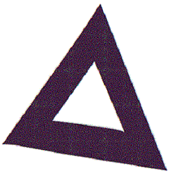
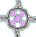

Aside:
A Place Where Three Roads Meet
Like so many, I was thoroughly indoctrinated by religion as a child. The particular brand doesn't much matter; for whatever beliefs are involved, religions are capitalizations of faith. The function of religion is preservation and promulgation of core values and beliefs while affording secular governance room to accommodate the material interests of the state. Generally speaking, the subtleties of doctrines are the business of initiates, while a majority of adherents are satisfied with surface meanings that hold keys to deeper understandings.
The just walk by faith, not by the doctrines of society's belief systems. The paths of true believers and of simplistic practitioners cross in the minds of those called to make a choice of what direction their lives should take: the right-hand path or that of the left. While most stumble in indecision, the chosen are those who find the hidden path of the middle way, the way to perfection.
Like the rich young ruler of the gospel parable, I had become spiritually bankrupt as a young adult. My mind had become cluttered with suppositions and expectations that arose from doctrines that had been hammered into me from my youth. My concept of faith was that I was obligated to conform my life not to any spiritual reality, but to a set of expectations based on rules. I tried my best to live as I imagined faith required, failing so many times. It was embarrassing.
Like the young man who came to master Y'shua, asking what he must do to inherit eternal life, my mind was cluttered with religious suppositions-- with righteous mammon, the teachings I had stored away in my heart and mind. Years after I had disassociated myself from any organized religion, however, it was given to me to take a first step along the transcendental path of the Spirit. God calls whom he will, when he will; and, having been surreptitiously "called" without much thought about what was going on, there came a day when I found myself , quite literally, walking out of my city apartment and away from all and everyone I knew.
I had only a vague sense of what I was doing (a subconscious awareness of the influence of the religious training I had rejected), but the grace of God was sufficient for each day on the homeless road. Wandering about, here and there, I had much plans. The story of the journey that led to the Crown Diamond revelation is written here. Simultaneously with the revelation, I was led to the companionship of two spiritual men with their own visions, and the three of us spurred each other along our separate paths.
On the threshold of a new understanding of scripture and the ways of hy, I was led by the Inward Breath into a close relationship with Michael Murphy, a student of both Jewish and Christian kabbalah, or "qabalah," as it is sometimes rendered into English. Understood as "tradition," kabbalah is the study of the oral, apocryphal, and pseudepigraphical traditions of the remnant, from the time of Moses to the present; and most kabbalistic works evidence a great reverence for the accepted, written canons, and for all teachings in which they perceive faces of Truth.
Shortly after meeting Michael and his family, I was led to friendship with Shmuel Wahli, a gifted student of messianic Judaism. A shaliach--one sent for a specific spiritual purpose, Shmuel's work is centered on understandings derived from knowledge of Sinaitic Hebrew. Paleo, as it is called, became a key element in my spiritual progress, also; and much of my work is a direct result of Shmuel's influence.
Called to interact with brothers whose perceptions and understandings were different and beyond my own, I was like a tree whose growth was influenced and enhanced by grafted knowledge from these two new friends. As our relationships developed, we each kept to the work to which each had been called, but our interactions took each of us beyond the comforts of individual thought.
Because there was no hostility between the three of us, we found common ground to work together for a number of years. Both Michael and Shmuel were writing, and I had been trained as an editor; so I volunteered to help with their work, which contributed greatly to my education. From the beginning of our time together, we found ourselves functioning in a place where three roads meet: not at Kether, but at Yesod, at Foundation.
Our spiritual lives were blessed by the amplification that builds upon cautious enthusiasm; and as the individual works with which each of us was tasked gained greater definition because of our work together, each of us was energized by expanding implications. Our individual points of view were ratified and augmented because their substances were caught up and swept along together within the energy generated by our loose collaboration. We influenced each other, but each of us carried the burden of his own soul as we traveled our separate paths in the service of the same Reality. The three g of us, each in his way, served the fourth among us, the Door d to the Way, Truth, and Life of Father hy.
Sharing each other's burdens, Michael learned how to organize material into books; and his last book is preserved at a website maintained by his family and friends after his passing. It's online here. Shmuel was considering abandoning the study of Sinaitic Hebrew, but he was persuaded of its importance; and I served as the unofficial editor of Bet HaShem publications for many years without ever joining the Midrash. While there, I designed the organizational framework for early editions of the BHM Dictionary. The first edition is online here.
Shmuel's works have been quite prolific since Michael passed and I was called to other things. Although the three of us were good friends and shared knowledge, we didn't always agree with each other's work. Brothers are for adversity, whether to toughen each other up or to share strength in times of trial. As individuals, each of us was made stronger by what we were able to share. Shmuel's latest works are available at the BHM website, which is online here.
We stood together without conspiracy at an intersection of three roads. The intersection was Yesod, as noted; and, as consequence, those roads were diverging, not meeting. When we turned from each other after a number of years, each of us was stronger, better prepared for his individual walk in the steps of Y'shua.
The heavenly Father had particular visions for each of us: not fantasies we might have carved out on our own by laying field to field, thought to thought, leaving no room for others. Separated unto our callings and services within the Kingdom of God, we fellowshipped in peace, one with the other, supping together at the Master's table. The place where three roads meet has involved separate journeys for each of us, but each of us found himself strengthened and edified by labor shared for the coming Kingdom of Names. I'm confident that Kether will find us standing together again, at the last day.
site |
 |
book |
||
|
Have Salt
In Yourselves |
||||
|
 Michael |
Shmuel |
|||
| Font | ||||